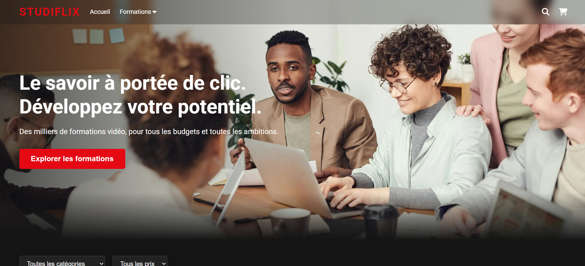
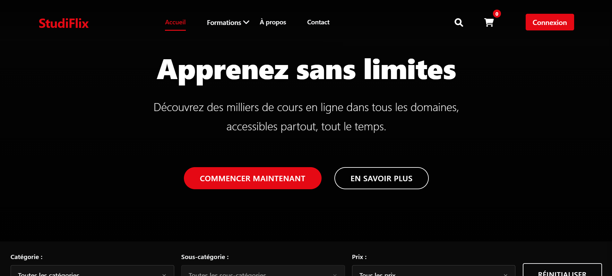

<div id="ajax-page" class="ajax-page-content">
    <div class="ajax-page-wrapper">
        <div class="ajax-page-nav">
            <div class="nav-item ajax-page-prev-next">
                <a class="ajax-page-load" href="portfolio-8.html"><i class="pe-7s-icon pe-7s-angle-left"></i></a>
                <a class="ajax-page-load" href="portfolio-10.html"><i class="pe-7s-icon pe-7s-angle-right"></i></a>
            </div>
            <div class="nav-item ajax-page-close-button">
                <a id="ajax-page-close-button" href="#"><i class="pe-7s-icon pe-7s-close"></i></a>
            </div>
        </div>

        <div class="ajax-page-title">
            <h1>StudiFlix - Clone Netflix</h1>
        </div>

        <div class="row">
            <div class="col-sm-12 col-md-8 portfolio-block">
                <!-- Carousel des captures d'écran -->
                <div class="owl-carousel portfolio-page-carousel">
                    <div class="item">
                        
                    </div>
                    <div class="item">
                        
                    </div>
                </div>

                <!-- Version A -->
                <div class="block-title" style="margin-top: 30px;">
                    <h3>Version A - Interface Simplifiée</h3>
                </div>
                <div class="portfolio-page-video" style="position: relative; padding-bottom: 60%; height: 0; overflow: hidden; min-height: 500px; margin-bottom: 30px;">
                <iframe class="embed-responsive-item" src="0/9- StudiFlix/Choix A/index.html" title="StudiFlix Version A" style="position: absolute; top: 0; left: 0; width: 100%; height: 100%; border: none;"></iframe>
                </div>

                <!-- Version B -->
                <div class="block-title" style="margin-top: 30px;">
                    <h3>Version B - Interface Avancée</h3>
                </div>
                <div class="portfolio-page-video" style="position: relative; padding-bottom: 60%; height: 0; overflow: hidden; min-height: 500px;">
                <iframe class="embed-responsive-item" src="0/9- StudiFlix/Choix B/index.html" title="StudiFlix Version B" style="position: absolute; top: 0; left: 0; width: 100%; height: 100%; border: none;"></iframe>
                </div>


<script type="text/javascript">
    function customAjaxScroll() {
        var windowWidth = $(window).width();
        if (windowWidth > 991) {
            // Scroll personnalisé pour la page Ajax
            $("#ajax-page").mCustomScrollbar({
                scrollInertia: 8,
                documentTouchScroll: false
            });
        } else {
            $("#ajax-page").mCustomScrollbar('destroy');
        }
    }

    jQuery(document).ready(function($){
        customAjaxScroll();

        var carousel = $('.portfolio-page-carousel');

        // S'assure que toutes les images et vidéos du carrousel sont chargées avant d'initialiser Owl Carousel
        carousel.imagesLoaded(function() {
            carousel.owlCarousel({
                smartSpeed: 1200,
                items: 1,
                loop: true,
                dots: true,
                nav: true,
                navText: false,
                margin: 10,
                autoHeight: true
            });

            // Le carrousel est maintenant initialisé et les images sont chargées, donc positionne les flèches de navigation
            positionNavArrows();
        });

        function positionNavArrows() {
            var allMedia = carousel.find('.owl-item img, .owl-item video');
            if (allMedia.length === 0) return;

            var loadPromises = allMedia.map(function() {
                var deferred = $.Deferred();
                var element = this;
                
                var resolveHeight = function() {
                    var height = $(element).height();
                    deferred.resolve(height > 0 ? height : Infinity);
                };

                if (element.tagName === 'VIDEO') {
                    if (element.readyState >= 1) resolveHeight();
                    else $(element).on('loadedmetadata', resolveHeight).on('error', () => deferred.resolve(Infinity));
                } else { // IMG
                    if (element.complete) resolveHeight();
                    else $(element).on('load', resolveHeight).on('error', () => deferred.resolve(Infinity));
                }
                return deferred.promise();
            }).get();

            $.when.apply($, loadPromises).done(function() {
                var heights = [].slice.call(arguments).filter(h => h !== Infinity);
                if (heights.length > 0) {
                    var minHeight = Math.min.apply(null, heights);
                    if (minHeight > 0) {
                        var navTopPosition = minHeight / 2;
                        var navContainer = carousel.find('.owl-nav');
                        navContainer.css({
                            'top': navTopPosition + 'px',
                            'margin-top': '0',
                            'transform': 'translateY(-50%)'
                        });
                    }
                }
            });
        }

        var resizeTimeout;
        $(window).on('resize', function() {
            customAjaxScroll();
            clearTimeout(resizeTimeout);
            resizeTimeout = setTimeout(positionNavArrows, 250);
        });
    });
</script>
            </div>

            <div class="col-sm-12 col-md-4 portfolio-block">
                <!-- Description du projet -->
                <div class="block-title">
                    <h3>Description</h3>
                </div>
                <ul class="project-general-info">
                    <li><p><i class="fa fa-user"></i> David D'AMORE</p></li>
                    <li><p><i class="fa fa-globe"></i> <a href="https://github.com/davistres" target="_blank">github.com/davistres</a></p></li>
                    <li><p><i class="fa fa-calendar"></i> 2024</p></li>
                </ul>

                <p class="text-justify">StudiFlix est un projet de clone Netflix réalisé dans le cadre de ma formation. Ce projet démontre mes compétences en développement frontend avec deux versions distinctes : une interface simplifiée (Version A) et une interface avancée avec des fonctionnalités supplémentaires (Version B). J'ai travaillé sur la navigation, l'affichage des vidéoq, les carrousels de contenu et l'expérience utilisateur globale.</p>


                <!-- Technologies -->
                <div class="tags-block">
                    <div class="block-title">
                        <h3>Technologie</h3>
                    </div>
                    <ul class="tags">
                        <li><a>HTML</a></li>
                        <li><a>CSS</a></li>
                        <li><a>JavaScript</a></li>
                        <li><a>UX/UI Design</a></li>
                    </ul>
                </div>


                <!-- Boutons de partage -->
                <div class="btn-group share-buttons">
                    <div class="block-title">
                        <h3>Partage</h3>
                    </div>
                    <a href="https://www.linkedin.com/in/david-d-amore-362307107/" target="_blank" class="btn"><i class="fa fa-linkedin"></i> </a>
                    <a href="https://github.com/davistres" target="_blank" class="btn"><i class="fa fa-github"></i> </a>
                </div>
            </div>
        </div>
    </div>
</div>
